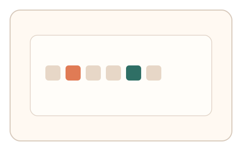
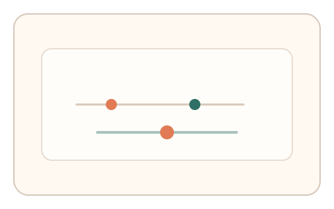

#122
D：单底座 × 单信号 × 自适应/短序列（视觉时域）
已扩展
眨眼窗宽度
在 RSVP 中调整两目标时间间隔直到可稳定捕捉双目标，记录间隔阈值与反应时曲线。
概念原文
RSVP 中出现两个目标，用户调整两目标时间间隔直到能稳定捕捉双目标，系统记录间隔阈值与反应时曲线并与群体基线对比。
以注意力眨眼的时间窗作为人类特征。
研究背景
注意力眨眼导致两个目标在特定时间窗内难以同时捕捉。通过调节目标间隔获得阈值与反应时曲线，可形成稳定的人类特征。
核心机制
- 呈现 RSVP 序列包含两个目标。
- 用户调节两目标间隔直到稳定捕捉。
- 记录阈值间隔与反应时曲线。
- 与群体基线分布进行比对。
用户流程
- 步骤 1：用户观看 RSVP 序列。
- 步骤 2：调节两目标间隔并确认。
- 步骤 3：系统记录阈值与反应时并判定。
判定信号
眨眼窗阈值
注意力眨眼时间窗具有稳定区间。
反应时曲线
阈值附近的反应时变化具有特征性。
判定逻辑
阈值与反应时曲线需落在人类分布区间；过度稳定或无眨眼效应判异常。
对抗面
- 脚本直接识别目标并设置极小间隔
- 重放真实用户的阈值序列
防御与缓解
- 随机化序列内容与目标位置
- 加入轻微噪声降低直接识别
- 叠加停顿与路径信号
可达性与风险
提供更慢序列与替代任务，避免对视觉敏感用户造成压力。
- 序列过快导致真实用户失败
- 设备刷新率影响间隔精度
可视化状态

状态 1：RSVP 序列
包含两个目标的快速序列。

状态 2：间隔调节
调节两目标间隔到可捕捉。

状态 3：阈值判定
比较阈值与反应时曲线。
参考资料
Attentional blink
说明注意力眨眼时间窗。
Rapid serial visual presentation
说明 RSVP 任务结构。